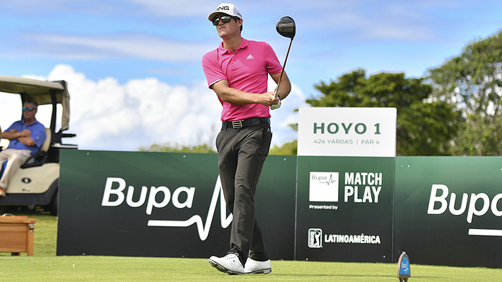
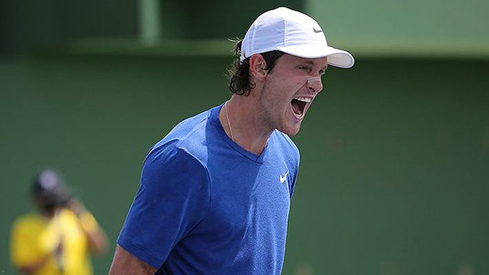
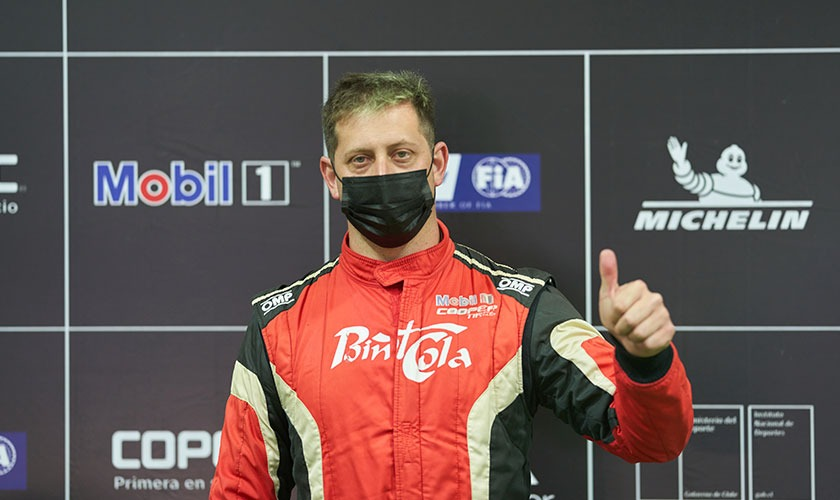

El Faro
Guillermo "Mito" Pereira da detalles de su amistad con Niemann y explica cómo un neuropsicólogo lo ayudó a entrar al PGA Tour |
|---|
Categoría: Deporte |
|

Habrán dos chilenos en la elite del golf mundial. Guillermo Pereira ha tenido una temporada extraordinaria en el Korn Ferry y aseguró su tarjeta para competir en el PGA Tour. Habrán dos chilenos en la élite mundial del golf. "Mito" se encontrará con Joaquín Niemann. "Me llevo súper bien con Niemann. De hecho, ahora estoy en su casa. Él está jugando el PGA Championship y estoy en su casa en Florida. Las comparaciones son complicadas porque nunca se sabe bien qué puede pasar. En el golf puedes comparar muchos jugadores y la comparación te diga que va a ganar este y gana más veces el otro. Es complicado. Para qué hacerlo si somos de un país que quiere hacerlo lo mejor posible" , comentó en entrevista con Agenda Deportes Emol TV. "Somos muy amigos. No hablamos tanto de golf, le gustan los autos y hablamos de eso o lo que sea. De golf a veces, un par de cosas, pero estamos todo el día jugando golf, si llegas a hablar más vas a quedar loco", agregó. Pereira conoce al talagantino desde hace muchos años. Se sigue sorprendiendo con su nivel. "Es dificil entender lo bueno que és. ¿Cómo no gana todas las semanas? Ahí uno se da cuenta lo difícil que es, lo competitivo que es. No sé si hay tanta gente que se cuenta lo bueno que es", apuntó. "Mito" también contó cómo la ayuda de un neuropsicólogo ha sido clave para elevar su rendimiento en el deporte. "Trabaja muchos con ejercicios. La lógica es que así como uno entrena el cuerpo con pesas o cardio, tiene que entrenar el cerebro, hacerlo funcionar de tal forma. Entrenamos mucho con sensores en el cerebro y en los brazos para ver las reacciones a las situaciones en las que él me ponga. Por ejemplo, delante de pantala te pones ejercicios que requieren concentración, otros que te requieren más calma y ahí va teniendo resultados con números. Puedes ir comparando qué estás haciendo bien, qué estás haciendo mal. Es súper bueno tener un feed back, en que te digan ‘tus ojos no son muy rápidos, no vas a poder ver bien la caída del putter’. Entonces, puedes entrenar eso", relató. |
Jarry se proclamó campeón del Challenger de Salinas y volvió a ganar un título |
|---|
Categoría: Deporte |
|

El chileno venció al colombiano Nicolás Mejía en Ecuador. Notable. Nicolás Jarry (507°) se consagró campeón del Challenger de Salinas en Ecuador. No ganaba un título desde el ATP de Bastad en julio de 2019. Es el primero, además, que consigue luego de la suspensión por doping que lo afectó. Poco a poco va dejando atrás el calvario que vivió. El tenista, que llegó a estar entre los 40 mejores del mundo, recibió una sanción de once meses en el 2020. Reapareció en el último noviembre. Fue duro. Estaba sin ranking y sufría para entrar a torneos. En Salinas, de hecho, pudo jugar gracias a una wild card. En la final, el chileno derrotó al colombiano Nicolás Mejía (382°) por parciales de 7-6 (7) y 6-1 en una hora y 29 minutos de partido. "Nico" llegaba con dudas al partido decisivo. En la semifinal ante el argentino Camilo Ugo Carabelli (311), que también se disputó este lunes, acabó con nauseas. El primer set fue muy parejo. Ambos estaban muy sólidos con su saque y no hubo ningún punto de quiebre. Con su primer servicio, Jarry ganó el 85% de los puntos. Hubo que ir al tie break y allí la raqueta nacional se puso 6-1 arriba. Sin embargo, no liquidó y Mejía mostró tenacidad para revertir la situación. Pero en ese momento complejo, Jarry mostró fortaleza mental para no dejarse llevar. Acabó imponiéndose 9-7. En el segundo set, la "Torre" consiguió rápidamente el primer quiebre del partido y se puso 2-0 arriba. Su rival sintió el golpe y Jarry volvió a quebrar. Aprovechó cada error no forzado del cafetalero y siguió implacable con su servicio para cerrar el partido. Es el cuarto Challenger en la carrera del chileno. En 2017 ganó los de Santiago, Quito y Medellín. Subirá hasta el puesto 367° del ranking. |
MARTÍN SCUNCIO FUE EL MÁS RÁPIDO EN EL SHAKEDOWN DEL RALLY BIOBÍO |
|---|
Categoría: Deporte |
|

La temporada 2022 del Copec RallyMobil ya está en marcha con el inicio de las actividades del Rally Biobío, competencia que marca la primera fecha del año de la competencia motor. Esta jornada se llevó a cabo el tradicional Shakedown, última instancia que tienen los equipos en carrera para poner sus autos a punto y probar su respuesta en un trazado que intenta ser lo más similar posible a las rutas donde se correrán las pruebas especiales. Finalizadas las pasadas, el binomio compuesto por el piloto Martín Scuncio y su navegante José Luis Díaz, del equipo Point Cola Racing, marcaron el mejor cronos del día con un tiempo de 3 minutos con 35,9 segundos en un trazado de 5,33 kilómetros. En segunda posición -con un tiempo de 03m36,8s- quedó la dupla francesa invitada conformada por el joven piloto Nicolás Ciamin y su navegante Yannick Roche. Ciamin fue designado días atrás por el equipo oficial Hyundai Motorsport como uno de los nuevos pilotos de desarrollo de la marca coreana junto a Fabrizio Zaldívar de Paraguay, Josh McErlean de Irlanda y Grégoire Munster de Luxemburgo. Cabe consignar que Zaldívar también está presente en la primera fecha de esta temporada. En tercera posición se anotó el binomio del equipo CBTech Rally by Skoda conformado por Jorge Martínez y Alberto Álvarez, actuales monarcas del campeonato tras ganar el año pasado. En los puestos de más abajo quedaron los binomios de Alberto Heller_Luis Allende, Fabrizzio Zaldivar_Carlos del Barrio y Emilio Fernández_Juan Manuel Sanhueza. “La verdad es que estoy muy feliz, muy contento. Obviamente agradecido del esfuerzo que ha hecho mi viejo y la familia para poder incorporar este nuevo auto (Skoda Fabia Rally2). Recién comenzamos con este auto y ya estamos andando bien, pero aún quedan muchos pasos que dar, empezar a trabajar y conocerlo más”, dijo Martín Scuncio tras adjudicarse el Shakedown. “Estar con un auto nuevo, compitiendo y estar adelante demuestra que hemos avanzado bastante tanto como equipo como en el manejo, así que feliz y ojalá poder seguir por este camino”, añadió el joven piloto. Por su parte, el director del equipo Point Cola Racing, Alberto Scuncio, destacó la calidad de los autos en competencia y la organización del evento. “Skoda, Hyundai y Citroën desde mi punto de vista son autos muy parejos, las pequeñas diferencias las empiezan a hacer los pilotos. Esa es mi opinión”, aseguró. El inicio de las actividades del Rally del Biobío también presentó como novedad una ronda en el Shakedown llamada Clasificatoria que mantiene el orden de largada invertido para la primera etapa, pero les permite a los pilotos elegir sus posiciones de partida dependiendo del resultado obtenido y donde clasificaron en las primeras posiciones Scuncio (03m34,2s), Martínez (03m34.3s) y Alberto Heller (03m37.6s). Tras la tradicional Largada Protocolar dispuesta para las 20:00 horas de hoy en el Parque Bicentenario de Concepción, los equipos en carrera irán a descansar para iniciar mañana viernes la competencia por los puntos. |